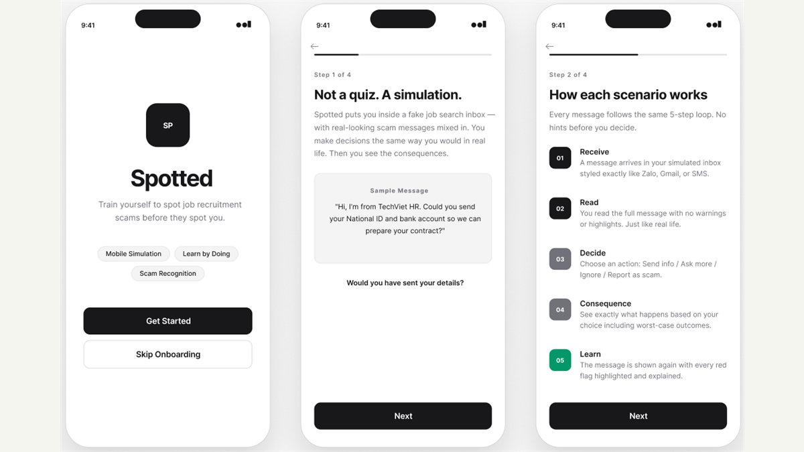
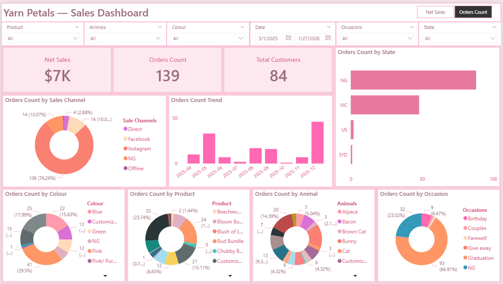

Spotted: Phishing Recognition and Response Prototype
Designed a Figma mobile prototype that helps students and recent graduates practise phishing recognition and safe response decisions in job-search scenarios.
View project
Designed a Figma mobile prototype that helps students and recent graduates practise phishing recognition and safe response decisions in job-search scenarios.
View project
Built a Power BI decision-support dashboard for ICMRA to analyse fundraising performance, contributor value, campaign efficiency, retention risk, and revenue growth scenarios.
View project
Redesigned a small-business sales reporting workflow by turning inconsistent order files into a structured dataset, validation process, and Power BI dashboard.
View project